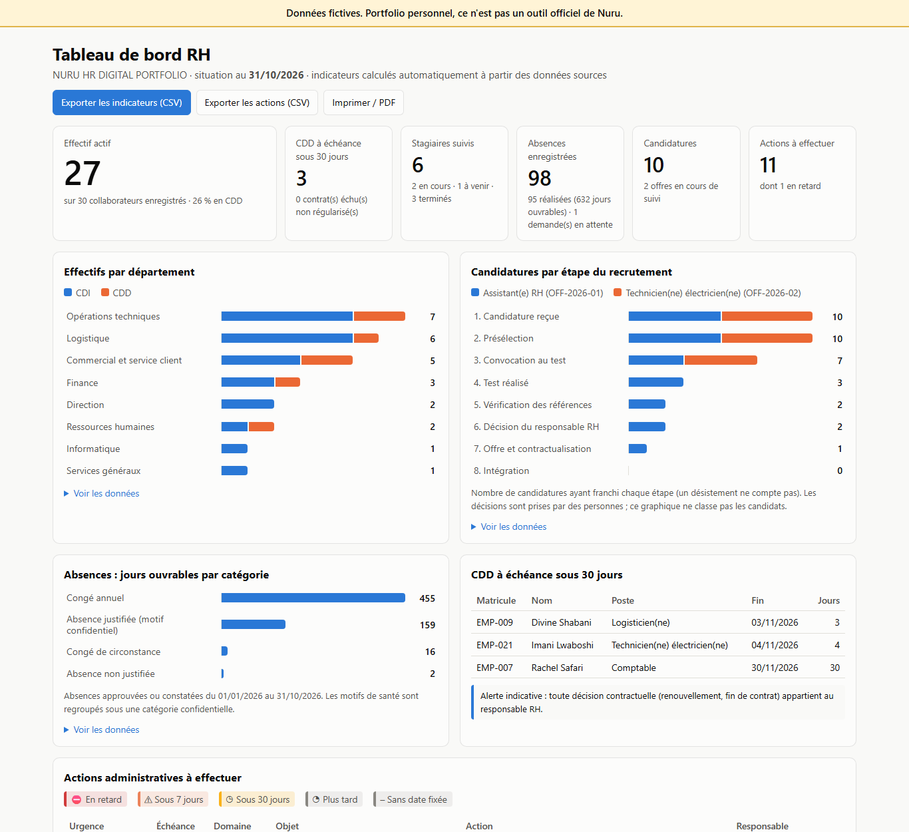
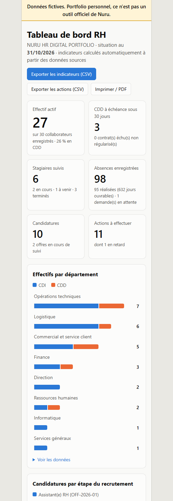
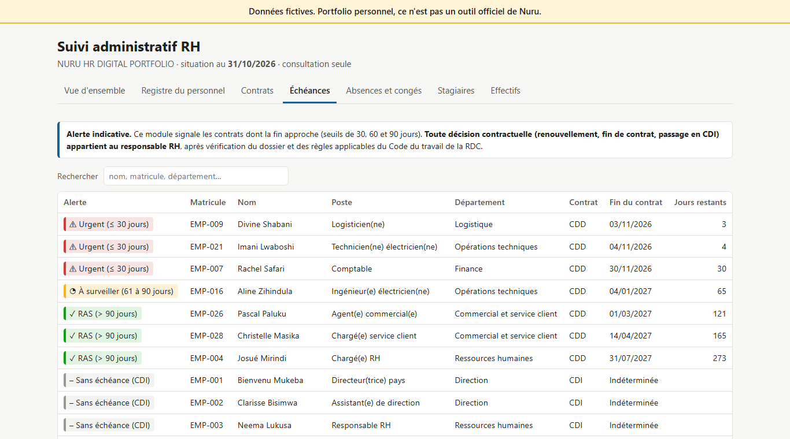
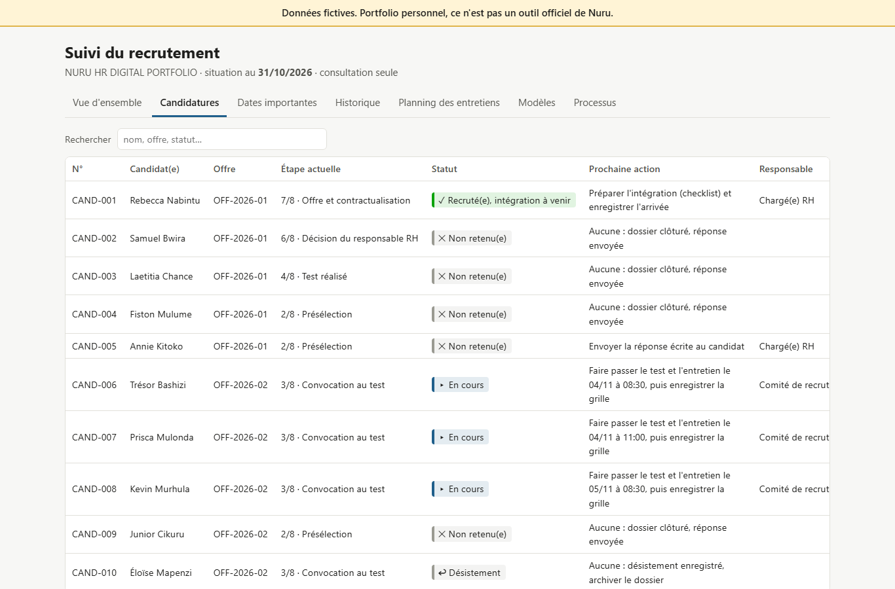

À compléter
Candidat(e) au stage en Ressources Humaines · Goma, République démocratique du Congo
Titulaire d'un Master en Management des organisations et d'une Licence en Sciences administratives et Management, je me suis formé(e) à la gestion des ressources humaines dans le contexte humanitaire et à l'usage professionnel de l'intelligence artificielle avec Claude. Ce portfolio montre, sur un cas entièrement fictif, comment j'organiserais le suivi administratif RH : registres fiables, alertes d'échéance, recrutement traçable, tableaux de bord et documents clairs.
Réalisation personnelle de démonstration. NURU HR DIGITAL PORTFOLIO accompagne ma candidature au stage en Ressources Humaines chez Nuru à Goma. Il est indépendant de Nuru : il n'a été ni commandé, ni validé, ni utilisé par Nuru, et ne repose sur aucune donnée de Nuru. Toutes les personnes et tous les chiffres présentés sont fictifs. Il ne décrit aucune expérience professionnelle.
Profil et formation
Ma formation en management des organisations m'a appris à raisonner en processus, en rôles et en indicateurs. C'est ce regard que j'applique ici à la fonction RH : qui fait quoi, à quel moment, avec quelle trace écrite et quel indicateur de suivi. Ma formation en GRH dans le contexte humanitaire m'a sensibilisé(e) à l'équité, à la confidentialité et à la redevabilité. Ma formation en IA avec Claude m'a appris à utiliser un assistant IA de façon encadrée.
Master en Management des organisations
Établissement : À compléter
Année : À compléter
Licence en Sciences administratives et Management
Établissement : À compléter
Année : À compléter
Introduction à la gestion des ressources humaines dans le contexte humanitaire
Établissement : À compléter
Année : À compléter
Intelligence artificielle appliquée au monde professionnel avec Claude
Établissement : À compléter
Année : À compléter
Compétences techniques
Le niveau indiqué est déclaré par moi-même. La dernière colonne précise ce que ce projet démontre réellement pour chaque outil.
| Outil | Niveau déclaré | Utilisation dans ce projet |
|---|---|---|
| Excel | À compléter | Registres CSV conçus pour Excel en français (séparateur « ; », accents) et exports CSV du tableau de bord. Pas de classeur .xlsx avancé (formules, tableaux croisés) dans ce projet. |
| SQL | À compléter | Base SQLite de 8 tables avec contraintes d'intégrité, 6 requêtes de consultation, requêtes de recoupement utilisées dans les tests. |
| Python | À compléter | Génération des données fictives, calculs RH, modules, tableau de bord et 76 tests automatisés, réalisés avec l'assistance de Claude Code (voir « IA responsable »). |
| R | À compléter | Non utilisé dans ce projet. |
| Power BI | À compléter | Non utilisé dans ce projet. Les tables de data/processed sont prêtes à être importées dans Power BI. |
Les problèmes RH que le projet cherche à résoudre
Dossiers difficiles à retrouver
Plan de classement, règles de nommage et contrôle trimestriel des dossiers individuels.
Contrats qui arrivent à échéance sans décision préparée
Alertes à 90, 60 et 30 jours ; la décision reste au responsable RH.
Effectifs mal connus d'un mois à l'autre
Registre mensuel calculé : effectif de début, entrées, sorties, effectif de fin.
Absences, congés et stagiaires suivis dans des fichiers dispersés
Registre unique, catégories confidentielles pour la santé, alertes de fin de stage.
Recrutement peu traçable
Processus en 8 étapes, prochaine action et responsable, décisions humaines enregistrées.
Pas de vue d'ensemble pour piloter
Tableau de bord : indicateurs, graphiques, actions à effectuer, export CSV.
Rapports rédigés à la main, chiffres incohérents
Rapport mensuel généré à partir des mêmes données que les outils.
Réalisations
Trois outils consultables dans le navigateur, sans installation, construits à partir de 30 collaborateurs, 6 stagiaires et 10 candidatures fictifs :








Insights RH
Constats calculés automatiquement à partir des données fictives au 31/10/2026, présentés de façon agrégée (aucun jugement sur une personne). Les pistes sont des suggestions : la décision appartient au responsable RH.
Échéances de CDD concentrées sur les prochaines semaines
3 / 7
3 des 7 CDD en cours se terminent dans les 30 jours (4 dans les 90 jours). Première échéance : 03/11/2026, dans 3 jours.
Piste : Préparer dès maintenant les dossiers (avis du responsable hiérarchique, besoins du service) pour que le responsable RH décide avant chaque échéance.
Actions administratives en retard
1
1 action(s) ont dépassé leur échéance ; la plus ancienne de 46 jours. Domaine(s) concerné(s) : Recrutement.
Piste : Traiter ces actions en priorité et ajouter un point hebdomadaire de suivi des échéances.
Département le plus dépendant des CDD
40 %
Commercial et service client : 2 CDD sur 5 personnes (40 %), contre 26 % pour l'ensemble de l'effectif. Calcul limité aux départements d'au moins 3 personnes.
Piste : Vérifier avec le responsable du département si ces postes correspondent à des besoins temporaires ou permanents.
Rotation du personnel depuis janvier
10,8 %
3 sortie(s) et 4 entrée(s) en 10 mois, pour un effectif moyen de 27,7 personnes. 2 des 3 sorties concernent le département Opérations techniques.
Piste : Proposer un court entretien de départ systématique pour comprendre les causes, sans en tirer de conclusion sur un cas isolé.
Absences non planifiées
1,5 %
91 jours d'absence non planifiés sur 6053 jours travaillables depuis le 1er janvier (absences pour raison de santé et absences non justifiées, congés exclus).
Piste : Suivre ce taux chaque mois ; une hausse durable justifie un échange collectif sur les conditions de travail, jamais un contrôle individuel des motifs.
Mois le plus chargé en congés annuels
mars 2026
86 jours de congé annuel en mars 2026, soit 19 % des 455 jours pris depuis janvier.
Piste : Établir un planning prévisionnel des congés par service pour garantir la continuité pendant les périodes chargées.
Efficacité du processus de recrutement
70 %
7 des 10 candidatures examinées en présélection ont été convoquées au test. Délai moyen entre la candidature et la décision du responsable RH : 38 jours. Sources à égalité parmi les convocations : Bouche-à-oreille, Site carrières, Université (2 chacune sur 7).
Piste : Comparer ce délai à l'objectif fixé par le responsable RH et conserver les canaux de diffusion qui apportent des profils adaptés.
Exemples de procédures et de rapports
Procédure : gestion des congés et des absences
Demande, validation, enregistrement et confidentialité des absences pour raison de santé.
Procédure : suivi des contrats et de leurs échéances
Alertes à 90, 60 et 30 jours ; décision réservée au responsable RH.
Procédure : organisation et archivage des dossiers individuels
Plan de classement, règles de nommage, sécurité des dossiers individuels.
Rapport mensuel RH : octobre 2026
Rapport mensuel RH généré à partir des données : effectifs, contrats, absences, recrutement, actions.
Planning des tests et entretiens
Exemple de planning de tests et d'entretiens, avec les rappels donnés au panel.
Checklist d'intégration : Rebecca Nabintu
Checklist d'intégration datée automatiquement à partir de la prise de fonction.
Courriel de convocation au test (exemple rempli)
Courriel de convocation au test, rempli à partir du modèle et du planning.
Utilisation responsable de l'IA et confidentialité
Comment l'IA a été utilisée
- Ce projet a été construit avec l'assistance de Claude Code (Anthropic) dans VS Code : structure, code, tests et premières versions des textes.
- Les propositions de l'IA ont été exécutées et vérifiées par des tests automatisés et un contrôle de cohérence. Je reste responsable du contenu publié.
- Les règles juridiques (Code du travail de la RDC) ne sont jamais affirmées par l'outil : elles sont signalées « à vérifier » par une personne compétente.
Aucune décision automatisée
- Le module de recrutement ne note pas, ne classe pas et ne sélectionne pas les candidats.
- Chaque étape est enregistrée par une personne ; la décision appartient au responsable RH.
- Aucune caractéristique sensible (genre, âge, origine, santé, situation familiale) n'est collectée sur les candidats.
- Les alertes de contrat sont indicatives : la décision contractuelle reste humaine.
Confidentialité
- Données 100 % fictives. Aucune donnée réelle n'a été transmise à l'IA.
- Minimisation : ni date de naissance, ni salaire, ni coordonnées dans les écrans de suivi.
- Les absences pour raison de santé apparaissent sous une catégorie confidentielle, sans détail médical.
- Les références d'un candidat ne sont contactées qu'avec son autorisation écrite.
Ce qui a été testé, et les limites
Tests automatisés
76 tests réussis
Exécutés lors de la génération de cette page, le 14/10/2026. Ils couvrent les calculs RH, les transitions du recrutement, les modèles de documents, les exports et le tableau de bord. Chaque indicateur est recalculé indépendamment, directement depuis les fichiers sources ou par des requêtes SQL.
Contrôle de cohérence des données
26 règles respectées
Contrats continus, effectifs mensuels équilibrés, absences dans la période d'emploi, processus de recrutement respecté, aucune caractéristique sensible collectée.
Vérifié dans le navigateur (14/10/2026)
- Affichage des 3 outils et du portfolio dans Microsoft Edge ; tableau de bord en thèmes clair et sombre.
- Affichage du tableau de bord sur une largeur de téléphone (390 px), sans défilement horizontal.
- Boutons d'export CSV (contenu des fichiers, accents) et infobulles des graphiques.
Limites connues
- Outils de consultation : pas de saisie dans le navigateur ; les données se modifient dans les scripts.
- Pas de mot de passe ni de gestion des droits : en situation réelle, il faudrait un espace à accès restreint ou un SIRH.
- Soldes de congés non calculés (règle d'acquisition à définir) ; jours fériés non déduits.
- Aucun courriel n'est envoyé ; aucune notification automatique.
- Non testés : la fenêtre d'impression PDF, le téléchargement réel dans le dossier de l'utilisateur, les navigateurs autres qu'Edge et les lecteurs d'écran.
- Excel, R et Power BI : pas de réalisation dédiée dans ce projet (voir le tableau des compétences).
Me contacter
- Nom : À compléter
- Ville : Goma, République démocratique du Congo
- E-mail : À compléter
- Téléphone : À compléter
- LinkedIn : À compléter
- Portfolio professionnel : À compléter
Le code source
Tout le projet (données fictives, scripts, tests, documentation) est consultable dans ce dépôt. Pour le relancer : voir README.md.